Technical SEO might sound like a complex term, especially if you're just starting your journey in search engine optimization. But this write-up will help you understand everything in easy and simple terms. We will talk about what is technical SEO, its importance, core components, tools, checklist, errors, and a lot more things.
To begin with,
think of your website as a book. Just as a book needs a clear table of contents, an easy-to-read layout, and a sturdy binding to ensure it can be easily found and read, your website requires a strong technical foundation to rank well on search engines like Google.
This aspect of SEO focuses on optimizing the infrastructure of your website, ensuring it can be crawled and indexed effectively, is secure, fast, and mobile-friendly, among other things.
For many beginners, learning technical SEO can be challenging. You might wonder about things like site speed, SSL certificates, or how to make your website mobile-friendly. The good news is, once you break down technical SEO into its core components, it's not as intimidating as it seems.
It's all about making your website more accessible and friendly to both search engines and your visitors.
By the end of this guide, you'll have a solid understanding of what technical SEO is, why it's crucial for your website's success, and how to start optimizing your site today.
And if you're looking to dive even deeper and get hands-on guidance, consider checking out the advanced SEO course by WsCube Tech. It's designed to cater to beginners and provides comprehensive insights into not just technical SEO, but all aspects of search engine optimization to help you rank better and reach your online potential.
What is Technical SEO?
Technical SEO is all about setting up the foundation of your website in a way that search engines love.
Imagine your website as a house. Just as you need a strong foundation, clear paths to enter and exit, and good security to make a house comfortable and safe, your website needs similar care to perform well on search engines.
This includes making sure your website loads quickly, is easy to navigate on any device, especially mobiles, and ensures that search engines can easily understand what your website is about.
For beginners, think of technical SEO as the behind-the-scenes work that might not always be visible but is crucial for your website's success. It's like ensuring the wiring and plumbing in our house analogy are in top shape. It is not the most glamorous part of building a house, but essential for a comfortable living.
Recommended Professional Certificates
AI-Powered Digital Marketing Course
Professional Certification in AI
Performance Marketing Bootcamp
SEO Specialist Bootcamp
Why is Technical SEO Important?
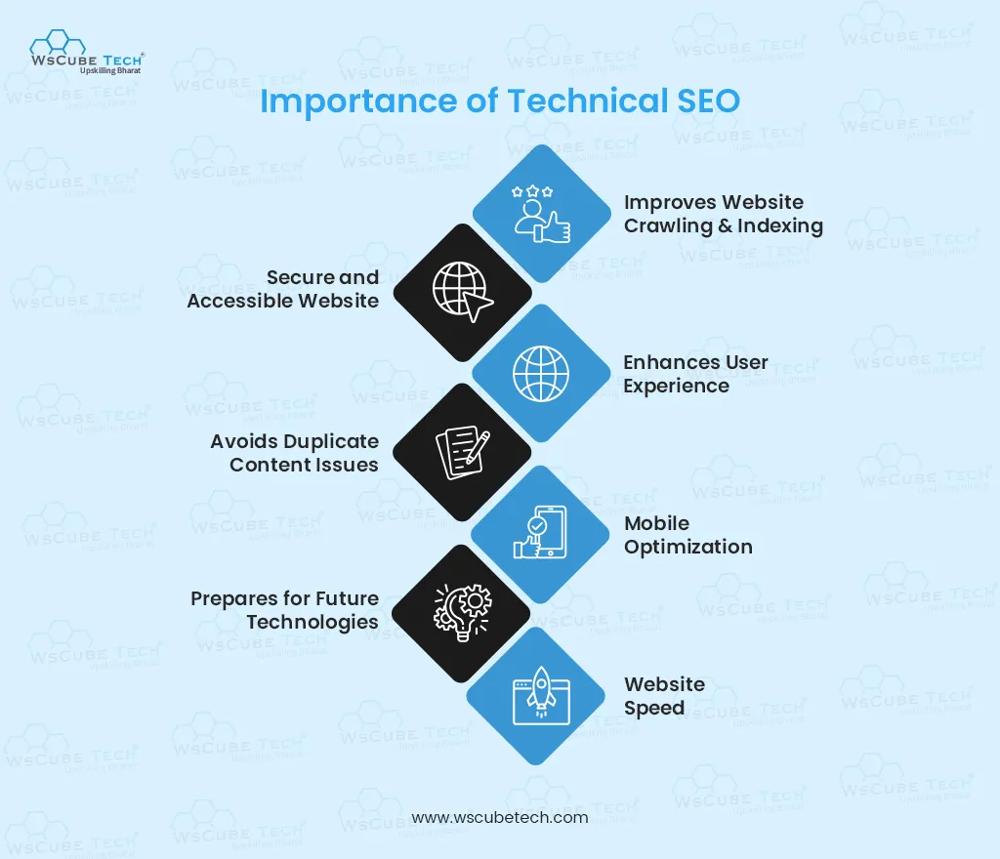
Technical SEO is a critical component of the overall SEO strategy, serving as the backbone of your website's online presence. While on-page SEO focuses on content and keywords and off-page SEO deals with external signals like backlinks, technical SEO ensures that your website is structured in a way that search engines can understand and favor.
The following reasons show the importance of technical SEO:
1. Improves Website Crawling and Indexing:
Search engines use bots to crawl websites, understanding and indexing their content. Technical SEO optimizes your site's structure, making it easier for these bots to navigate your site, find pages, and index them appropriately.
Without proper technical SEO, even high-quality content may remain invisible to search engines.
2. Enhances User Experience:
Technical SEO directly impacts how users interact with your website. A site that loads quickly, is easy to navigate, and is free from broken links or errors offers a better user experience.
This not only keeps users on your site longer but also signals to search engines that your site is of high quality, which can improve your rankings.
3. Mobile Optimization:
With the majority of internet users accessing the web via mobile devices, having a mobile-friendly website is essential.
Technical SEO involves optimizing your site for mobile, ensuring fast loading times, and making sure your site is usable on a small screen. This is crucial for ranking well, especially since Google uses mobile-first indexing.
4. Website Speed:
Site speed is a ranking factor, as search engines aim to provide users with the best possible experience.
Technical SEO techniques, such as optimizing images, leveraging browser caching, and minimizing code, significantly improve your site's loading times.
5. Secure and Accessible Website:
Ensuring your website uses HTTPS is a critical aspect of technical SEO. A secure site protects your users' information and is favored by search engines.
Additionally, making your website accessible to users with disabilities not only broadens your audience but also improves your SEO.
6. Avoids Duplicate Content Issues:
Technical SEO helps manage and prevent duplicate content, which can dilute your site's relevance and potentially lead to lower rankings.
By using canonical tags and proper redirects, you can tell search engines which pages are primary and should be indexed.
7. Prepares for Future Technologies:
As search engine algorithms evolve and new technologies emerge, a solid tech SEO foundation helps ensure your site can adapt and continue to perform well.
For instance, the growing importance of voice search and AI technologies means websites must be structured in ways that these new technologies can understand and interact with.
Upcoming Masterclass
Attend our live classes led by experienced and desiccated instructors of Wscube Tech.


Core Components of Technical SEO
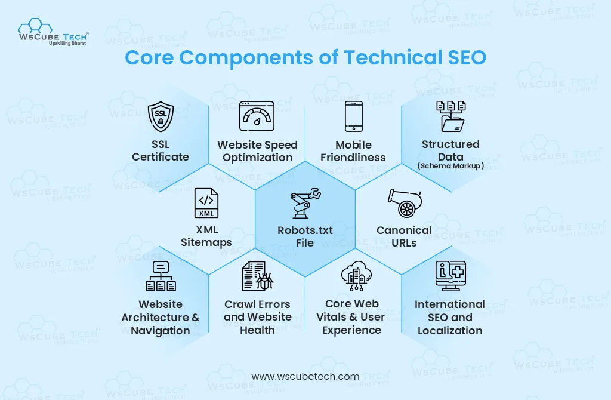
Let’s dive into the most important aspects of technical SEO:
1. Website Speed Optimization
The speed at which your website loads is not just an important part of providing a good user experience; it's also a significant factor in SEO performance.
Importance of Site Speed for SEO
- Search Engine Ranking: Google and other search engines prioritize user experience in their ranking algorithms. A faster website provides a better experience, making site speed a critical factor in search rankings. Slow-loading sites can suffer lower rankings.
- User Experience and Conversion Rates: Website speed directly impacts how users perceive your site. Faster sites are more likely to retain visitors, reduce bounce rates, and increase conversion rates. Users are less patient than ever, with many expecting a site to load in 3 seconds or less.
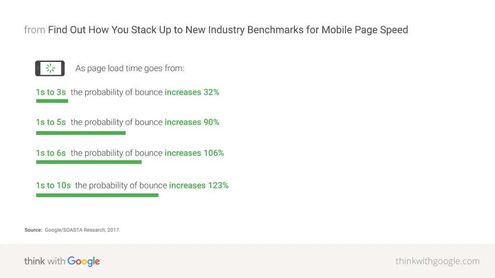
- Mobile Experience: With the increasing prevalence of mobile browsing, speed becomes even more crucial. Mobile users often face less stable internet connections, making optimization important for keeping your site accessible to everyone.
Tools for Measuring Website Speed
Best Website Speed Test Tools for Measuring and Improving Website Performance
- Google PageSpeed Insights: This tool provides valuable insights into your website's performance on both mobile and desktop devices. It offers both a speed score and suggestions for improvements.
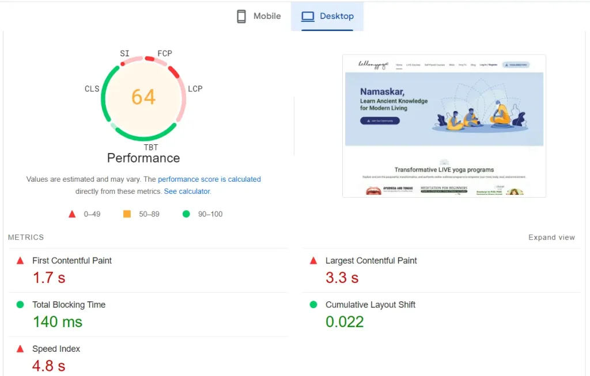
- GTmetrix: GTmetrix analyzes your page's speed performance using Google PageSpeed and YSlow scores, providing actionable recommendations.
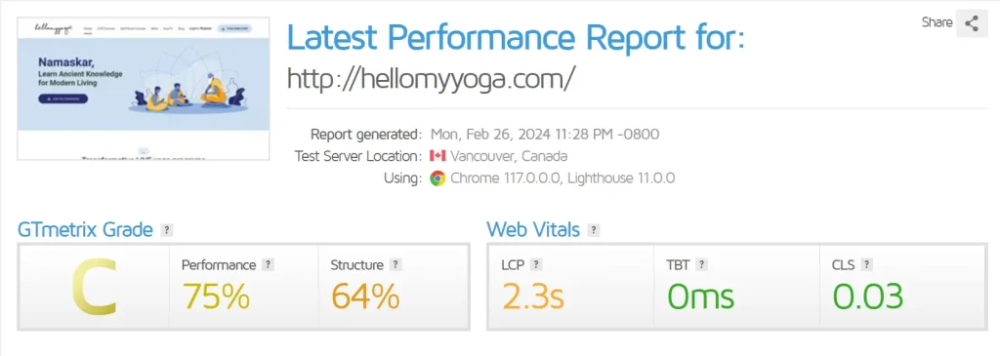
Strategies to Improve Website Loading Times
Improving your website's loading times involves a mix of quick wins and longer-term strategies:
- Optimize Images: Large images can significantly slow down your pages. Compressing images and using the correct formats (like WebP) can reduce their size without sacrificing quality.
- Enable Caching: Browser caching stores parts of your site on a visitor's device on their first visit, reducing load times on subsequent visits. Use caching for static resources like CSS, JavaScript, and images.
- Minimize HTTP Requests: Reduce the number of elements (scripts, images, CSS files) your web page needs to load. Combine files where possible, and use CSS sprites for images.
- Use a Content Delivery Network (CDN): CDNs distribute your content across multiple servers worldwide, allowing users to download your site's files from the closest server, speeding up access.
- Minify CSS, JavaScript, and HTML: Removing unnecessary characters from your code (like whitespace, comments, and unused code) can reduce file sizes and improve load times.
- Optimize CSS and JavaScript Loading: Use asynchronous loading for JavaScript files and prioritize above-the-fold content to load first, so users can start interacting with your site as quickly as possible.
- Improve Server Response Time: Look for performance bottlenecks like slow database queries, slow routing, or a lack of adequate memory and address them. Consider upgrading your hosting solution if necessary.
2. Mobile Friendliness
In today’s digital world, mobile friendliness is not just a feature—it's a necessity. With the majority of internet users accessing websites from mobile devices, ensuring your site is mobile-friendly is crucial for both user experience and SEO.
Impact of Mobile Responsiveness on SEO
- Google’s Mobile-First Indexing: Google predominantly uses the mobile version of the content for indexing and ranking. This shift to mobile-first indexing underscores the importance of having a mobile-friendly website for SEO.
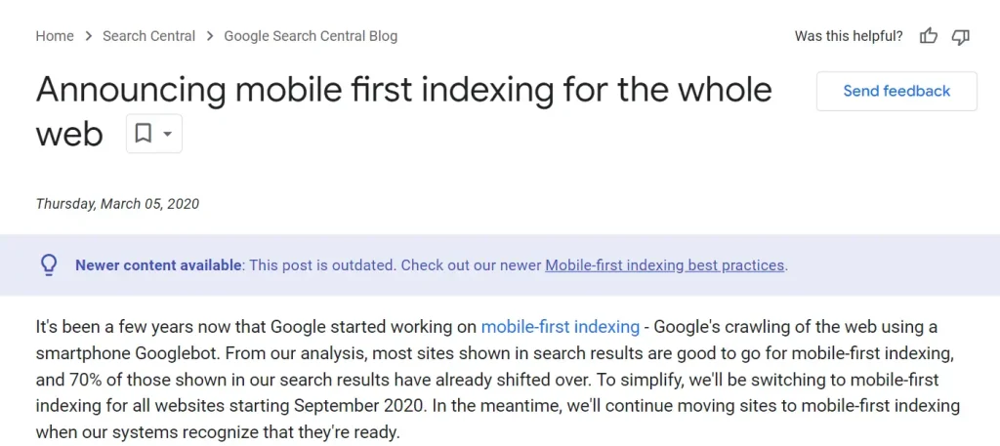
- User Engagement and Behavior: Mobile users expect fast, easy-to-navigate websites on their devices. A site that performs poorly on mobile is likely to have higher bounce rates and lower engagement, negatively affecting its SEO performance.
How to Make Your Website Mobile-Friendly?
- Responsive Design: Implement a responsive web design that automatically adjusts the layout and content based on the screen size of the device. This ensures your site is accessible and navigable on all devices, from desktops to smartphones.
- Simplify Navigation: Mobile screens offer limited space. Simplify your site’s navigation to make it easy for mobile users to find what they're looking for with minimal taps or swipes.
- Optimize Images and Media: Compress images and use responsive images that adjust in size based on the screen. This reduces load times and data consumption for mobile users.
- Use Large, Readable Fonts: Small text is hard to read on mobile devices. Ensure your font sizes are large enough to be readable without zooming.
- Avoid Flash: Flash is not supported on most mobile devices and can hinder your site's usability. Use HTML5 or other web standards for animations or interactive elements.
- Optimize for Touch: Design your site with touch in mind. Make sure buttons and links are easy to tap, and consider the ergonomics of touch navigation.
3. SSL Certificate
SSL, which stands for Secure Sockets Layer, is a technology that encrypts the connection between a user's browser and the server where a website is hosted.
This encryption ensures that any information exchanged between the user and the site, such as personal details, login credentials, or credit card information, remains private and secure from hackers.
Importance of SSL for SEO
- Ranking Signal: Google has confirmed that SSL is a ranking signal. This means that websites with SSL certificates may have an advantage in search engine rankings over those without, all else being equal.
- Increased User Trust: The increased trust that comes with SSL can lead to better user engagement rates, lower bounce rates, and higher conversion rates, all of which are positive signals to search engines about the quality and reliability of your site.
- Secure Browsing Experience: Search engines aim to provide users with safe browsing experiences. Sites with SSL certificates contribute to this goal, making them more likely to be favored by search engines.
How to Implement SSL?
- Buy an SSL Certificate: SSL certificates are provided by Certificate Authorities (CAs). Many web hosting services offer SSL certificates as part of their hosting packages, sometimes even for free.
- Activate the Certificate: Once you've obtained your SSL certificate, you'll need to activate it. This process varies depending on your hosting provider but usually involves generating a Certificate Signing Request (CSR) on your server.
- Install the Certificate: After activation, you'll receive your SSL certificate, which you then need to install on your web server. Again, your hosting provider will likely have instructions or may even handle this step for you.
- Update Your Site to Use HTTPS: After installing your SSL certificate, ensure your website uses HTTPS (the secure version of HTTP) by default. This might involve updating settings in your CMS, web hosting environment, or manually updating links to resources (like images and stylesheets) to use HTTPS.
Also Read: How to Make Money in Digital Marketing? 12 Best Ways
4. Structured Data (Schema Markup)
Structured data markup, often associated with schema markup, is a form of code that you can add to your website's HTML to help search engines understand the content of your pages better.
This code provides search engines with explicit clues about the meaning of a page and its content, enabling them to display your website in search results more effectively.
For example, you can tell search engines that a certain piece of text is the name of an event, the author of an article, or the cooking time for a recipe.
Benefits of Structured Data for SEO
- Rich Snippets: Websites with structured data can qualify for rich snippets in search results. These are enhanced search listings, including visual enhancements like star ratings, images, or additional information like cooking times for recipes. Rich snippets can significantly increase your site's click-through rates.
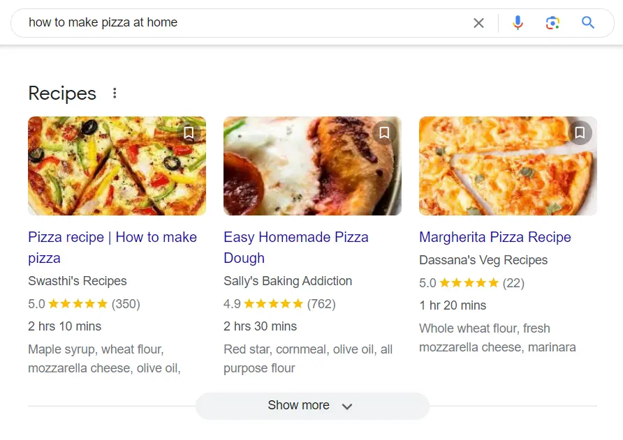
- Improved Search Engine Understanding: Structured data helps search engines understand the context of your content. This clearer understanding can lead to better indexing and, potentially, a higher ranking for relevant queries.
- Support Voice Search: With the rise of voice search, structured data becomes even more critical. Devices like smart speakers use structured data to understand and deliver answers to voice queries, making your content more accessible through voice search.
- Increase in Traffic and Engagement: By providing more informative and visually appealing search results, structured data can increase the likelihood of users clicking through to your website. This can lead to higher traffic and greater user engagement.
Tools for Testing and Implementing Schema Markup
- Google's Structured Data Testing Tool: This tool allows you to paste in a URL or code snippet to check for proper implementation of structured data. It's useful for debugging and validating your structured data.
- Schema.org: The official site of the schema project provides comprehensive documentation, examples, and vocabularies you can use to mark up your pages correctly.
- Google's Rich Results Test: This tool tests your page to see if it's eligible for rich snippets in Google's search results, providing you with a preview of how your page might appear.
- Structured Data Markup Helper by Google: This tool helps you visually tag elements on your website without directly editing the HTML. You can select the type of data and then point and click to tag your content. Google will generate the appropriate schema markup for you.
5. XML Sitemaps
XML Sitemaps are a crucial tool in the SEO toolkit, serving as a roadmap for search engines to follow when crawling your website. They list the URLs of a site along with additional metadata about each URL, such as when it was last updated, how often it changes, and its importance relative to other URLs.
This information helps search engines crawl your site more intelligently.
Purpose of XML Sitemaps
- Facilitates Faster Discovery: XML sitemaps help search engines quickly find and index your pages, especially useful for new websites or ones with thousands of pages or complex structures.
- Improves Crawling Efficiency: By highlighting the most important pages and those that are updated frequently, sitemaps enable search engines to crawl your site more effectively, focusing their efforts where it matters most.
- Supports Pages Not Easily Discoverable: Pages not well-linked to from other sites or within your own site (like pages accessible through forms or user searches) might not be discovered by search engines. Sitemaps ensure these pages are also indexed.
- Helps in Content Categorization: The metadata provided in sitemaps can help search engines understand the content of your site better, ensuring it's indexed and returned in search results where it's most relevant.
Creating an XML Sitemap:
- Automatic Sitemap Generation: Many content management systems (CMS) like WordPress, Drupal, or Shopify have plugins or built-in features to automatically generate a sitemap for you. Tools like Yoast SEO for WordPress can create and update your sitemap as your site changes.
- Manual Sitemap Creation: For websites without a CMS or for more control, you can manually create an XML sitemap using an XML sitemap generator tool online or by hand-coding it, following the XML sitemap protocol guidelines.
Submitting Your Sitemap to Google:
- Sign in to Google Search Console.
- Select your website from the property list.
- Click on 'Sitemaps' under the 'Indexing' section.
- Enter the URL of your sitemap in the 'Add a new sitemap' field and click 'Submit'.
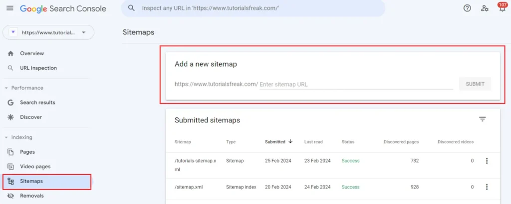
Tips for Sitemap Submission:
- Regularly update your sitemap to reflect new or removed pages.
- Your sitemap should only contain URLs you want search engines to crawl and index.
- If your website is large, consider using sitemap index files to manage multiple sitemaps. This helps keep your sitemaps organized and makes it easier for search engines to process them.
6. Robots.txt File
The robots.txt file is a fundamental part of a website's SEO strategy, serving as the first line of communication between your site and search engine crawlers.
This text file, placed in the root directory of your website, tells search engines which pages or sections of your site should not be crawled and indexed.
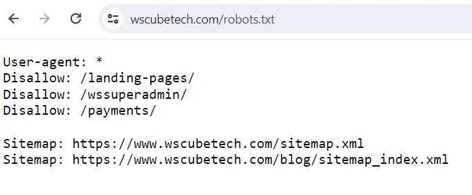
Purpose of Robots.txt
- Controls Crawler Traffic: Robots.txt helps manage the traffic of search engine crawlers on your site, ensuring that important content is prioritized and unnecessary resources are not wasted on irrelevant or sensitive areas.
- Prevents Indexing of Non-Public Pages: Certain pages on a website, like admin pages or unpublished content, should not be accessible via search engines. Robots.txt can prevent these sections from being crawled and indexed.
- Optimizes Crawl Budget: For larger sites, ensuring search engines spend their crawl budget on high-value pages is crucial. Robots.txt can help direct crawlers away from low-priority pages, optimizing the use of your site's crawl budget.
How to Create Robots.txt File?
- Start by opening a basic text editor, such as Notepad on Windows or TextEdit on Mac. It's important to use a plain text editor to avoid adding any formatting to the file.
Write User-agent and Disallow Rules:
- The User-agent line specifies which crawler the rule applies to. Using User-agent: * applies the rule to all crawlers.
- The Disallow line tells the crawler which directories or pages it should not access. For example, Disallow: /private/ would block access to the /private/ directory.
- If you want to specifically allow certain crawlers to access parts of your site that are generally disallowed, you can use the Allow directive.
- Name the file robots.txt and save it to the root directory of your website. The root directory is the highest folder level that contains your website content (e.g., www.wscubetech.com/robots.txt).
7. Canonical URLs
A canonical URL is the URL of the page that search engines are advised to consider as the authoritative source from several possible duplicates. By specifying a canonical URL, you're essentially telling search engines:
"Of all the pages with similar content, this one is the most useful. Please prioritize it in search results."
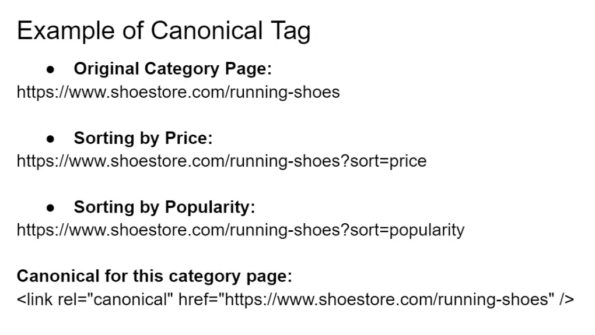
How to Use Canonical Tags to Prevent Duplicate Content Issues?
- Identifying Duplicate Content: First, identify pages on your site that have similar or identical content. This could be product pages with URLs that differ only by a parameter, articles accessible through multiple paths, or print versions of web pages.
- Deciding on the Preferred URL: Choose which version of the URL you want search engines to index and rank. This should be the version that's most valuable for users and has the potential to rank best in SERPs.
- Implementing the Canonical Tag: Add a <link rel="canonical"> tag in the <head> section of the HTML of the duplicate pages, pointing to the preferred URL.
For example, if www.example.com/page1 and www.example.com/page1?parameter are duplicates, and you've chosen www.example.com/page1 as the canonical version, you would add the following tag to the <head> of both pages:
<link rel="canonical" href="http://www.example.com/page1" />- Consistency Is Key: Ensure that internal links on your site point to the URL version you've designated as canonical. This consistency helps reinforce to search engines which version of the content is preferred.
8. Website Architecture and Navigation
A well-structured website architecture and intuitive navigation are not just about aesthetics or user experience; they play a critical role in SEO. Search engines crawl websites by following links, both internal and external, to understand and index the content of each page.
A coherent site structure and clear navigation paths make it easier for search engines to do their job and for users to find the information they need.
Importance of a Well-Structured Website for SEO
- Improved Crawling and Indexing: A logical structure with clear internal linking ensures search engines can easily crawl all your pages. This thorough understanding helps in better indexing of your content in search results.
- Enhanced User Experience: Users should find what they're looking for with minimal effort. A well-organized site keeps users engaged longer, reducing bounce rates and increasing the likelihood of conversions, which are positive signals to search engines.
- Efficient Distribution of PageRank: Google’s PageRank is distributed through links. A well-planned architecture ensures that link equity is efficiently passed through your site, boosting the ranking potential of important pages.
- Facilitates Content Discoverability: By categorizing content logically, users and search engines can discover your website's breadth of content more easily, enhancing visibility across a wider array of search queries.
Tips for Optimizing Site Architecture and Navigation
- Start with a Hierarchy: Before designing your website, plan out its structure. Create a hierarchy that logically categorizes your content into main categories and subcategories. Each main category should be accessible from the homepage and reflect a core area of your business or site content.
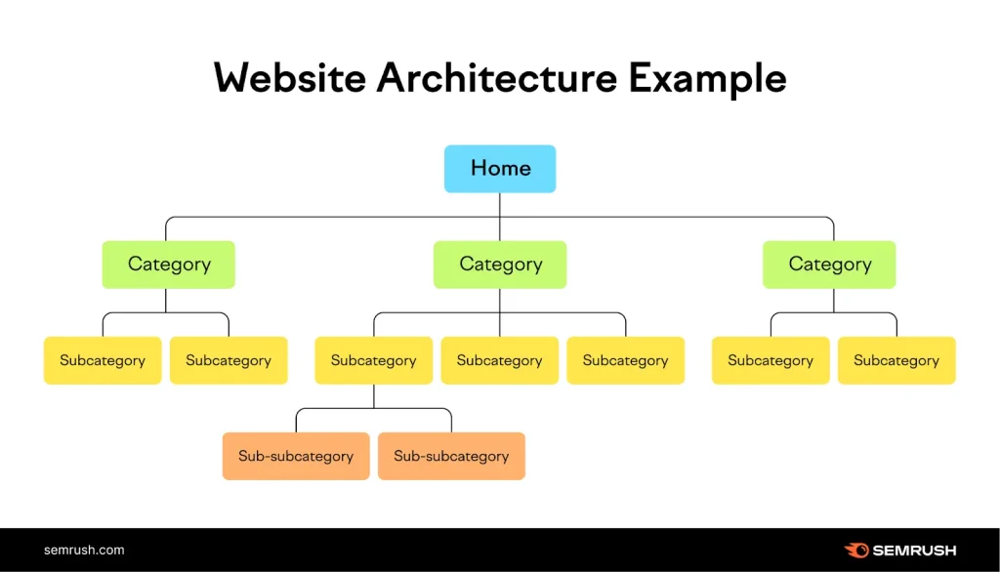
- Implement a Simple, Scalable URL Structure: URLs should follow your hierarchy, being both readable by humans and logically organized for search engines. For example, www.example.com/category/subcategory/page clearly indicates the page’s position within the site hierarchy.
- Use Descriptive Navigation Labels: Navigation menus are a key feature of your site architecture. Use descriptive, keyword-relevant labels for your navigation links. This not only helps users but also gives search engines context about the linked pages.
- Use Breadcrumbs: Breadcrumbs are navigational aids that show users their current location within a site's hierarchy. They help users navigate your site more effectively and also provide search engines with another layer of information about your site structure.
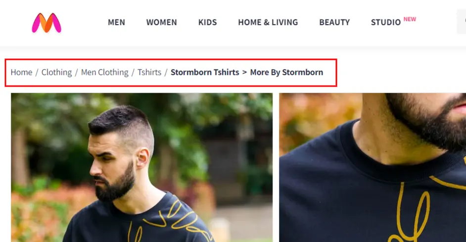
- Optimize Internal Linking: Use internal links wisely to connect your content and guide both users and search engines to related topics and important pages. Anchor text for internal links should be descriptive and relevant to the target page.
- Minimize Click Depth: Important pages should be accessible within three clicks from the homepage. A shallow site structure ensures that no content is buried too deep for users or search engines to easily find.
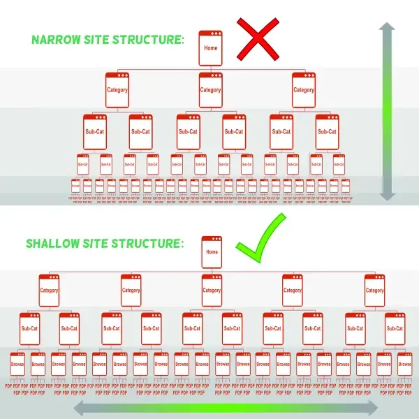
- Use a Sitemap: While primarily for search engines, a sitemap also aids in organizing and planning your site structure. An XML sitemap helps search engines crawl your site, while an HTML sitemap can assist users in navigation.
9. Crawl Errors and Website Health
Crawl errors occur when search engine bots try to access specific pages on your website but fail due to various reasons. These errors hinder your website's ability to be indexed effectively, impacting its visibility in search results.
Regularly monitoring website health and addressing crawl errors is crucial for maintaining and improving your site's SEO performance.
How to Identify and Fix Crawl Errors?
Use Search Console Tools for identifying crawl errors. In the Page Indexing reports, you can see why pages aren’t indexed.
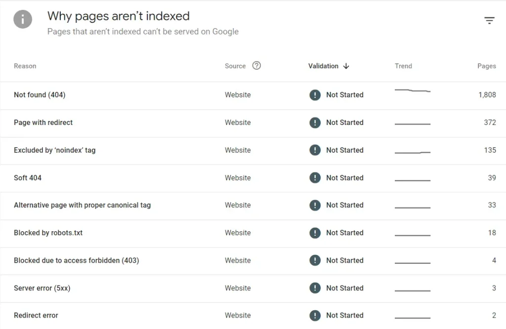
The most common errors that impact your website’s indexing are:
- Server Errors (5xx): These indicate problems with your server. Check your server's configuration, security settings, and ensure it's not overloaded.
- 404 Errors (Not Found): These occur when a page doesn't exist. For removed content, consider implementing 301 redirects to relevant pages or improving your 404 page to help users find what they're looking for.
Correct the Errors:
Fix Broken Links: Use tools to find and fix broken internal and external links.
Update Your Sitemap: Ensure your XML sitemap is up-to-date and doesn't contain URLs that result in errors.
Improve Server Performance: If server errors are frequent, upgrade your hosting plan, optimize your web server settings, or consult with a server administrator.
Submit for Reindexing: After fixing the errors, use Google Search Console to request a re-crawl of your site. This prompts search engines to update their indexing based on the corrected pages.
Tools for Monitoring Website Health and Indexing Status
- Google Search Console
- Screaming Frog SEO Spider
- Ahrefs
- SEMrush
- Moz Pro
10. Core Web Vitals and User Experience
Core Web Vitals are a set of specific factors that Google considers important in a webpage's overall user experience. They are part of Google's "Page Experience" signals, which play a crucial role in search engine rankings.
Understanding Core Web Vitals and their impact on user experience is essential for any SEO strategy, as they directly influence a site's visibility and performance in search results.
Core Web Vitals consist of three primary metrics:
- Largest Contentful Paint (LCP): Measures loading performance. To provide a good user experience, LCP should occur within 2.5 seconds of when the page first starts loading.
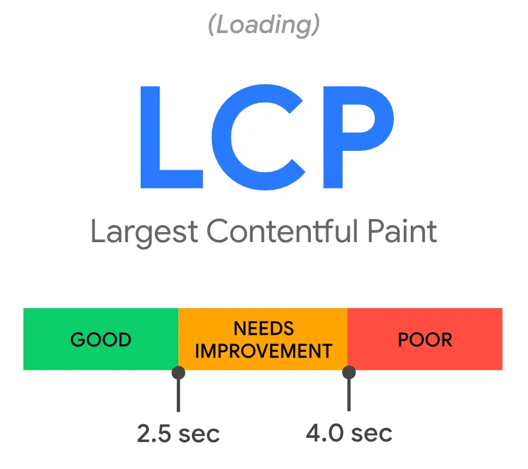
- First Input Delay (FID): Measures interactivity. Pages should have an FID of 100 milliseconds or less to ensure responsiveness.
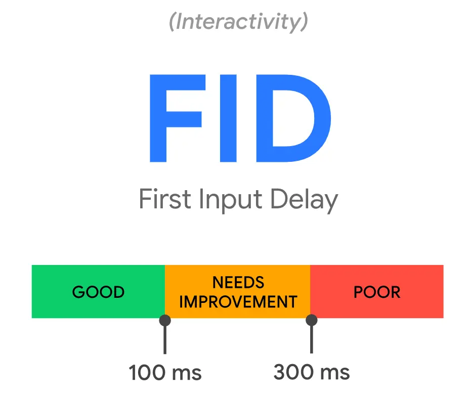
- Cumulative Layout Shift (CLS): Measures visual stability. To ensure a page is stable as it loads, the CLS should be less than 0.1.
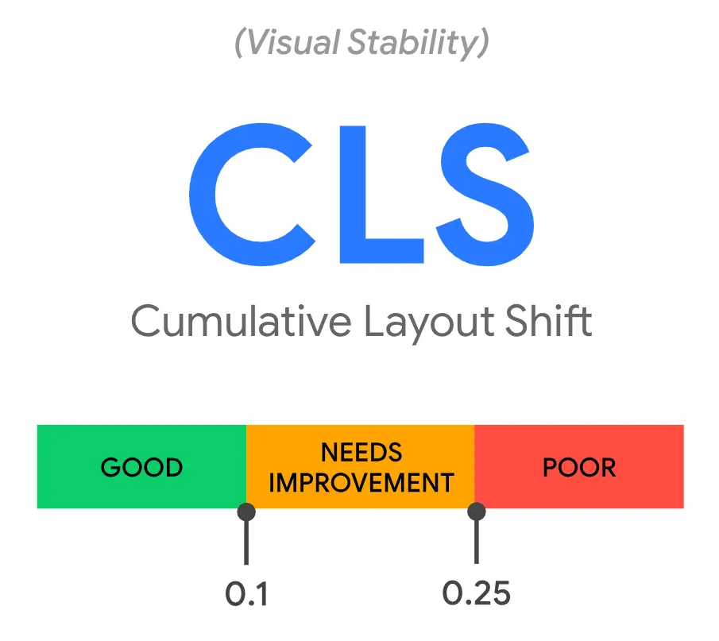
- Interaction to Next Paint (INP): It is a new concept that replaces FID in March 2024. INP measures a page’s overall responsiveness to user interactions. It observes the latency of clicks, taps, and keyboard interactions throughout a session.
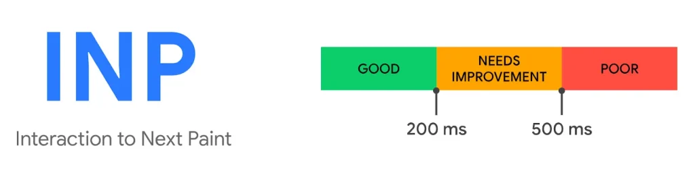
You can view the Core Web Vitals report in Google Search Console under the Experience section:
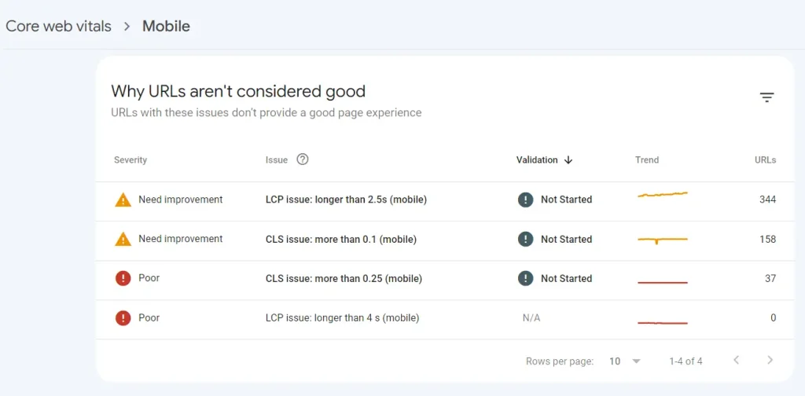
How User Experience Impacts SEO?
Sites that offer a superior user experience are more likely to rank higher in search results. This is because search engines aim to provide users with the best possible results, prioritizing websites that meet or exceed these user experience benchmarks.
Also Read: How to Become Freelance Digital Marketer?
11. International SEO and Localization
International SEO and localization are about optimizing your website so that search engines can easily identify which countries you are targeting and which languages you use for business.
This process involves strategic planning and implementation of practices like using hreflang tags for multilingual websites and adhering to best practices for international SEO.
These efforts ensure that your content reaches the right audience in the right language, enhancing user experience and potentially increasing global traffic and conversions.
Understanding hreflang Tags for Multilingual Websites
Hreflang tags are an essential part of international SEO. They tell search engines which language you are using on a specific page, so the search engine can serve that result to users searching in that language.
This is particularly important for websites that have content in multiple languages or similar content targeted at different regions.
a) Implementation:
The hreflang attribute is added to the <link> element in the HTML document's head section or HTTP header, specifying the language (in ISO 639-1 format) and optionally the region (in ISO 3166-1 Alpha 2 format).
For example, en-us for English speakers in the United States and en-gb for English speakers in Great Britain.
b) Use Cases:
It’s used for websites that have content in multiple languages or regional variations of the same language, addressing differences in spelling, currency, and cultural nuances.
c) Benefits:
Proper use of hreflang tags can reduce the likelihood of duplicate content issues, improve targeting in SERPs, and enhance the user experience by directing them to the version of your site most relevant to their language or region.
Best Practices for International SEO
- Website Structure: Choose the right URL structure for your international sites. Options include using country-code top-level domains (ccTLDs), subdomains with gTLDs, or subdirectories with gTLDs. The choice depends on your resources, target markets, and SEO goals.
- Localize Content: Beyond direct translation, adapt your content to reflect local cultural nuances, currency, and user behavior. It ensures that the content resonates with the target audience, improving engagement and conversion rates.
- Optimize for Local Search Engines: While Google is dominant in many countries, don't ignore local search engines like Baidu in China, Yandex in Russia, or Naver in South Korea. Understand and optimize for the specific requirements of these search engines.
- Link Building: Develop a localized link-building strategy. Acquire links from country-specific websites to increase the relevance of your localized content in the eyes of search engines.
- Local User Experience: Consider local norms and preferences in design, payment methods, and customer service. Ensure the website loads quickly in target regions, possibly by using a content delivery network (CDN).
- Monitor Performance and Iterate: Use tools like Google Analytics and Search Console to monitor the performance of your international sites. Look at metrics like traffic, conversion rate, and bounce rate by country and language to identify areas for improvement.
Explore Key SEO Topics That You Should Know
| Types of SEO | SEO Syllabus | SEO KPIs |
| Types of Backlinks | SEO Tools | Search Engine Functions |
| Keywords Types in SEO | Local SEO Ranking Factors | Website Speed Test Tools |
Advanced Technical SEO Strategies
Now that you about the primary factors in tech SEO, let’s learn some advanced strategies:
1. AMP (Accelerated Mobile Pages)
In today's fast-paced digital world, the speed and performance of your website on mobile devices are crucial for retaining visitors and improving search engine rankings. This is where Accelerated Mobile Pages (AMP) come into play.
AMP is an open-source initiative aimed at making the web better for all by enabling web pages to load instantly on mobile devices.
It is a framework developed by Google in collaboration with other technology companies and publishers. It consists of three core components: AMP HTML, AMP JavaScript (JS), and AMP Cache.
Together, these components allow for the creation of lightweight web pages that load nearly instantaneously on mobile devices. AMP achieves this by simplifying HTML code, prioritizing resource loading, and utilizing a content delivery network (CDN) to cache and serve optimized pages.
Benefits of Implementing AMP
- Improved Page Load Speed
- Increased Mobile Traffic
- Better Search Engine Ranking
- Enhanced User Experience
- Increased Visibility in Google Search
2. Using CDN (Content Delivery Network)
A CDN is a network of servers distributed globally, designed to deliver web content and pages to users based on their geographic location.
By caching content on multiple servers around the world, a CDN ensures that when a user requests your webpage, the content is delivered from the nearest server, thereby reducing latency, improving site speed, and enhancing the user experience.
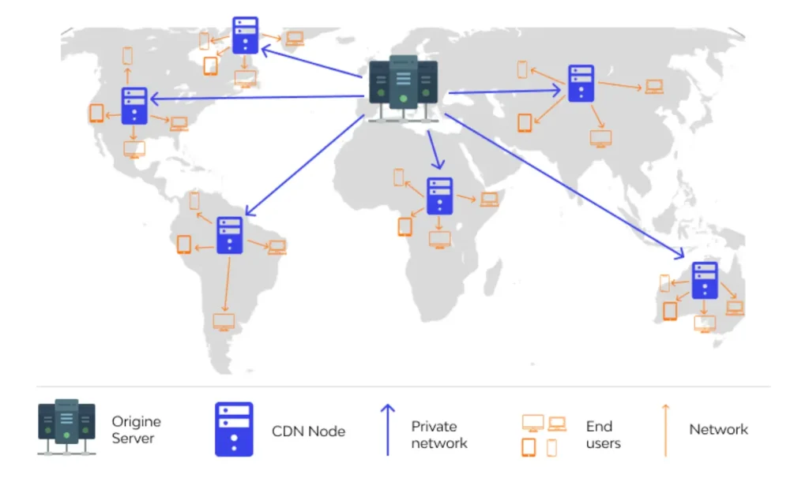
Benefits of Using a CDN for SEO
- Improved Page Load Times: By serving content from the nearest geographical server to the user, a CDN can drastically reduce page load times. This is crucial for SEO as faster websites tend to rank higher in search engine results pages (SERPs).
- Reduced Server Load: CDNs can handle the bulk of traffic and bandwidth demand by caching content across their network, reducing the load on your primary server. This can prevent your site from crashing during traffic spikes, ensuring it remains accessible and performs well at all times.
- Enhanced User Experience: Fast loading pages and consistent uptime contribute to a better user experience, which is a key factor in SEO rankings. Happy users are more likely to stay longer, explore more pages, and return to a fast-performing site.
- Increased Content Availability and Redundancy: With content replicated across multiple servers, a CDN ensures that your website remains available even if one or more servers go down. This redundancy can protect your site's SEO performance by minimizing downtime.
3. SEO Considerations for Single-Page Applications (SPAs)
Single-page applications (SPAs) have become increasingly popular due to their ability to provide a seamless and dynamic user experience, similar to desktop applications. SPAs load a single HTML page and dynamically update content as the user interacts with the app, without reloading the page.
While SPAs can offer significant performance and user experience benefits, they also present unique challenges for search engine optimization (SEO).
a) Ensuring Content is Crawlable and Indexable
- Server-Side Rendering (SSR): Implement SSR to pre-render pages on the server. This ensures that search engines can crawl and index your content effectively, as they receive fully rendered HTML for each page.
- Pre-Rendering: If SSR is not feasible, consider pre-rendering your SPA pages into static HTML. Tools and services like Prerender.io can generate and serve static versions of your pages to search engines, ensuring content is accessible.
- Dynamic Rendering: As an alternative to SSR and pre-rendering, dynamic rendering serves a client-side version of the SPA to users and a pre-rendered version to search engines. This approach can balance user experience with SEO needs.
b) Enhancing Navigation and Linking
- Use HTML5 History API: For SPAs, the HTML5 History API allows you to update the browser's history and URL without a full page reload. This is crucial for creating navigable, bookmarkable URLs for different views within your SPA.
- Internal Linking: Ensure that your SPA includes proper internal linking. This helps search engines discover content and understand the site structure, improving your site's SEO.
c) Improving Page Load Performance
- Optimize Assets: Minimize CSS and JavaScript files, and compress images. Efficient asset management reduces load times, improving both user experience and SEO.
- Lazy Loading: Implement lazy loading for images and non-critical resources. This means only loading assets when they are needed, which can significantly improve page load times.
d) Structured Data and Metadata
- Dynamic Metadata: Use JavaScript to dynamically update metadata (title tags, meta descriptions) when the content changes. This helps search engines understand each "page" within your SPA.
- Structured Data: Implement structured data (schema markup) to help search engines understand the content and context of your pages. This is particularly important for SPAs, where content relationships might not be as obvious as in multi-page applications.
e) Monitoring and Testing
- Google Search Console: Use Google Search Console to monitor how well your SPA is being crawled and indexed. The tool can also help identify any crawling issues or errors that need to be addressed.
- SEO-Friendly URLs: Ensure that your SPA uses SEO-friendly URLs. Avoid hashbangs (#!) if possible, as they are not recommended for SEO. Instead, use clean, readable URLs that reflect the content of the page.
Explore Our Most Popular Marketing Courses
Technical SEO Ranking Factors
- Mobile-Friendliness: Websites optimized for mobile devices rank better, especially since Google's mobile-first indexing.
- Page Speed: Fast-loading pages are favored by search engines, providing a better user experience.
- Secure Website (HTTPS): Secure sites using HTTPS are given preference over non-secure sites.
- Core Web Vitals: Google's user experience metrics (loading, interactivity, and visual stability) are ranking factors.
- Structured Data Markup: Implementing schema.org helps search engines understand content and can enhance visibility in search results.
- User Experience (UX): A good user experience, including easy navigation and engaging content, indirectly affects rankings.
- Crawlability: Search engines must be able to crawl and index a site's content; proper use of robots.txt and sitemaps facilitates this.
- Website Architecture: A logical structure with a clear hierarchy improves indexing and user experience.
- Internal Linking: Proper use of internal linking helps distribute page authority throughout the site and improve navigation.
- Mobile Page Speed: Specifically, the loading speed of your site on mobile devices can impact rankings, particularly after mobile-first indexing.
- URL Structure: Clear and descriptive URLs are easier for search engines to understand and can contribute to better rankings.
- Server Location: The geographical location of your server can influence site speed and, indirectly, SEO rankings for regional searches.
- 404 Errors: Too many 404 errors can harm user experience and potentially affect a site's ranking.
- Canonical Tags: Use of canonical tags helps prevent issues with duplicate content across multiple URLs.
- Robots Meta Tags: Controlling crawler access and indexation of specific pages can impact which content is ranked.
- Hreflang Tags: For multilingual or multi-regional sites, hreflang tags help search engines serve the correct language or regional URL in search results.
Also Read: How to Increase Website Traffic? 20 Best Ways
Technical SEO Checklist
- Ensure the website is using HTTPS
- Implement responsive design for mobile-friendliness
- Optimize site speed
- Use a Content Delivery Network (CDN) for global content delivery
- Create and submit an XML sitemap to search engines
- Configure robots.txt to control crawler access
- Fix crawl errors and broken links
- Use hreflang tags for multilingual or multi-regional sites
- Implement structured data markup for rich snippets
- Optimize URL structure for clarity and keyword inclusion
- Ensure internal linking structure
- Conduct regular site audits to identify and fix technical SEO issues
- Monitor and improve Core Web Vitals scores (LCP, INP, CLS)
- Ensure accessibility for users and search engine crawlers
- Secure the website against hacking and spam
- Optimize pagination and faceted navigation
- Avoid duplicate content issues with canonical URLs
- Ensure 404 pages are user-friendly and include a search function or link to the homepage
- Minimize the use of JavaScript for critical content and links
- Validate HTML and CSS to ensure compliance with web standards
- Regularly update CMS and plugins to the latest versions for security and performance
- Monitor site performance and user experience across different devices and browsers
- Use SSL certificates to secure data transfer
- Implement AMP (Accelerated Mobile Pages) for key mobile content (optional)
- Leverage lazy loading for images and non-critical resources
- Optimize server response time and configure server settings for optimal performance
Technical SEO Tools
1. Google Search Console

Monitors website performance in Google search results, identifies crawl errors, examines backlinks, and checks mobile usability.
2. Screaming Frog SEO Spider

Crawls websites to identify technical issues, such as broken links, missing meta tags, duplicate content, and redirects.
3. PageSpeed Insights (Google)

Analyzes the content of a web page, then generates suggestions to make that page faster, measuring both mobile and desktop performance.
4. Ahrefs

Offers site audit features to detect technical SEO issues, backlink analysis, keyword research, and competitor analysis.
5. SEMrush

Provides a comprehensive toolkit including site audits, keyword research, competitor analysis, and tracking SEO performance.
6. Moz Pro

Offers site crawling to identify SEO issues, keyword research tools, and insights on page optimization and link building opportunities.
7. GTmetrix

Analyzes the loading speed of web pages, provides performance scores, and offers actionable recommendations to improve website speed.
8. Yoast SEO (for WordPress)

Focuses on making website content SEO-friendly, generates XML sitemaps, and helps with content analysis and readability.
9. Google Structured Data Testing Tool
Validates structured data on a web page by checking for errors in schema markup implementation.
10. DeepCrawl
Provides deep site crawling and analysis to understand and monitor technical issues, site architecture, and SEO performance over time.
Also Read: 20 Best AI Tools for Digital Marketing (Free & Paid Tools)
Future of Technical SEO
The future of Technical SEO is evolving rapidly, shaped by technological advancements, changing search engine algorithms, user behavior trends, and the increasing importance of user experience.
As we look ahead, several key trends and areas are set to influence tech SEO, making it more integral to online success than ever before.
1. AI and Machine Learning
Search engines are increasingly using artificial intelligence (AI) and machine learning to better understand user intent, personalize search results, and improve the accuracy of their rankings.
This means technical SEO will need to adapt to these technologies by focusing on content quality, relevance, and user engagement, beyond traditional optimization techniques.
2. Voice Search Optimization
With the rise of virtual assistants and smart speakers, voice search is becoming more prevalent. This shift requires a new approach to technical SEO, emphasizing natural language processing, conversational queries, and local SEO, as voice searches are often more localized and spoken in natural, conversational language.
3. Mobile-First Indexing
As mobile usage continues to outpace desktop, mobile-first indexing is now the standard for Google. This shift emphasizes the importance of mobile-friendly design, fast loading times, and responsive web design.
Technical SEO strategies must prioritize the mobile user experience, ensuring websites are optimized for speed, navigation, and content accessibility on smaller screens.
4. Core Web Vitals and User Experience
Google's introduction of Core Web Vitals as ranking factors highlights the importance of user experience metrics in SEO. This includes loading performance, interactivity, and visual stability of pages.
Future technical SEO efforts will need to focus on optimizing these aspects to ensure a smooth, fast, and engaging user experience, directly impacting search rankings.
5. Structured Data and Schema Markup
As search engines aim to provide richer results and direct answers within SERPs, the role of structured data and schema markup becomes increasingly critical.
Implementing this markup helps search engines understand the context and content of web pages, facilitating the display of rich snippets and enhancing visibility in search results.
6. Security and Privacy
With growing concerns over data privacy and security, HTTPS has become a standard, and its importance will only grow. Technical SEO strategies will need to incorporate robust security measures, including secure protocols, data protection, and privacy practices, to meet both search engine requirements and user expectations.
7. Emerging Technologies
The integration of emerging technologies like augmented reality (AR), virtual reality (VR), and the Internet of Things (IoT) into search and user experiences will open new frontiers for technical SEO.
Optimizing for these technologies will require innovative approaches to content, metadata, and user engagement strategies.
Key SEO Topics You Need to Know
| SEO Keyword Research Tools | Technical SEO Checklist | Off Page SEO Techniques |
| Link Building Mistakes | On Page SEO Factors | Best SEO Chrome Extensions |
| AI SEO Tools | On Page SEO Checklist | SEO Meta Tags |
Technical SEO Interview Questions
- What is technical SEO, and how does it differ from on-page and off-page SEO?
- How do search engines crawl and index web pages?
- What is the purpose of the robots.txt file, and how do you use it?
- Can you explain the importance of SSL and how it affects SEO?
- What are XML sitemaps, and why are they important for SEO?
- How do you optimize a website for mobile devices, and why is mobile optimization important for SEO?
- What are Core Web Vitals, and how do they impact SEO?
- How do you identify and fix crawl errors on a website?
- What is structured data, and how can it be used to enhance SEO?
- How does website speed affect SEO, and what tools can you use to measure site speed?
- Explain the concept of canonical URLs and their significance in SEO.
- What strategies would you use to resolve duplicate content issues?
- How does a Content Delivery Network (CDN) affect SEO?
- What are hreflang tags, and when should you use them?
- What is AMP, and how does it impact SEO?
- How would you optimize a website that uses JavaScript frameworks like React or Angular for SEO?
- What are the most important factors to consider when creating a site architecture for SEO?
- How do you ensure a website is accessible to search engines and users?
- What steps would you take to perform a technical SEO audit?
- How do you stay updated with the latest SEO trends and algorithm changes?

FAQs About Tech SEO
Technical SEO is the process of optimizing a website's infrastructure to help search engines crawl and index it more effectively. It involves improving site speed, ensuring mobile-friendliness, implementing SSL for security, creating XML sitemaps, optimizing robots.txt, and more. It's a crucial part of digital marketing as it lays the foundation for a website's visibility and ranking in search engine results.
Yes, SEO has a future. As long as search engines are the primary method for people to discover content, products, and services on the internet, SEO will remain an essential component of digital marketing. The strategies and tactics may evolve with technology and search engine algorithms, but the need for SEO is likely to continue.
A technical SEO audit is a comprehensive examination of a website to identify issues affecting its search engine visibility. It covers aspects like site speed, mobile-friendliness, indexation, security, structured data, and more. The goal is to find and fix problems that could hinder the site's performance in search results.
A technical SEO specification is a document that outlines SEO best practices, guidelines, and specific requirements for website development. It serves as a blueprint for developers and SEO specialists to ensure that a website is built with search engine optimization in mind from the ground up.
To perform a technical SEO audit, you should:
Analyze the website's crawlability and indexation status using tools like Google Search Console.
Check the site's mobile-friendliness and loading speed with tools like Google's Mobile-Friendly Test and PageSpeed Insights.
Review security aspects, ensuring the site uses HTTPS.
Inspect on-site SEO factors like structured data, XML sitemaps, and robots.txt files.
Identify and resolve any duplicate content or canonicalization issues.
Evaluate the website's architecture for user and search engine friendliness.
The benefits of technical SEO include improved website speed, better user experience, increased crawlability and indexation by search engines, enhanced security, and ultimately, higher rankings in search engine results pages (SERPs). This leads to more visibility, traffic, and potentially conversions.
A technical SEO checklist is a comprehensive list of items to check and optimize on a website to improve its search engine rankings. It typically includes ensuring site speed optimization, mobile-friendliness, secure connections (HTTPS), proper use of robots.txt, creating and submitting XML sitemaps, implementing structured data, and fixing crawl errors.
To become a technical SEO manager, you should:
Gain a solid understanding of SEO principles and technical aspects of website development.
Acquire experience in SEO through projects, internships, or work experience.
Stay updated with the latest SEO trends, tools, and algorithm changes.
Develop strong analytical and problem-solving skills.
Consider certifications or courses in SEO and related fields to enhance your knowledge and credibility.
Technical SEO issues can include problems like slow site speed, poor mobile responsiveness, issues with site security (not using HTTPS), crawl errors, duplicate content, incorrect use of robots.txt or canonical tags, and missing XML sitemaps. These issues can negatively impact a site's search engine rankings.
An SEO tech developer is a specialist who combines knowledge of SEO with technical skills in web development. They focus on optimizing websites for search engines from a technical standpoint, ensuring the site is built and structured in a way that maximizes its visibility and ranking in search engine results. They work on aspects such as site speed optimization, mobile responsiveness, structured data implementation, and more.
Wrapping Up:
Mastering technical SEO is important for anyone looking to enhance their website's visibility and performance in search engines. As we've explored the core components and advanced strategies of Technical SEO, it's clear that staying updated with the latest trends and techniques is crucial.
The advanced online SEO course by WsCube Tech is an excellent resource for those eager to dive deeper and expand their SEO skills. This comprehensive course covers everything from the basics to the most advanced aspects of SEO, equipping you with the skills needed to thrive in your careers.
Join Our On-Campus Digital Marketing Program
Explore Our Free Courses


Leave a comment
Your email address will not be published. Required fields are marked *Comments (0)
No comments yet.